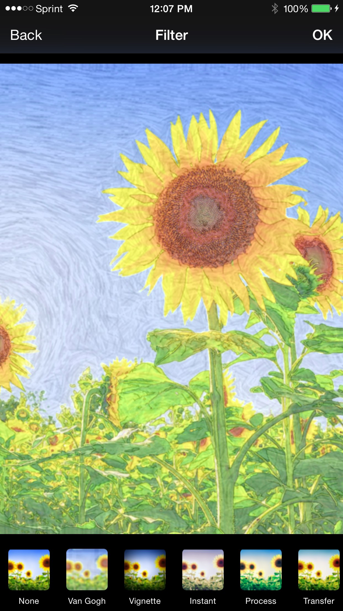
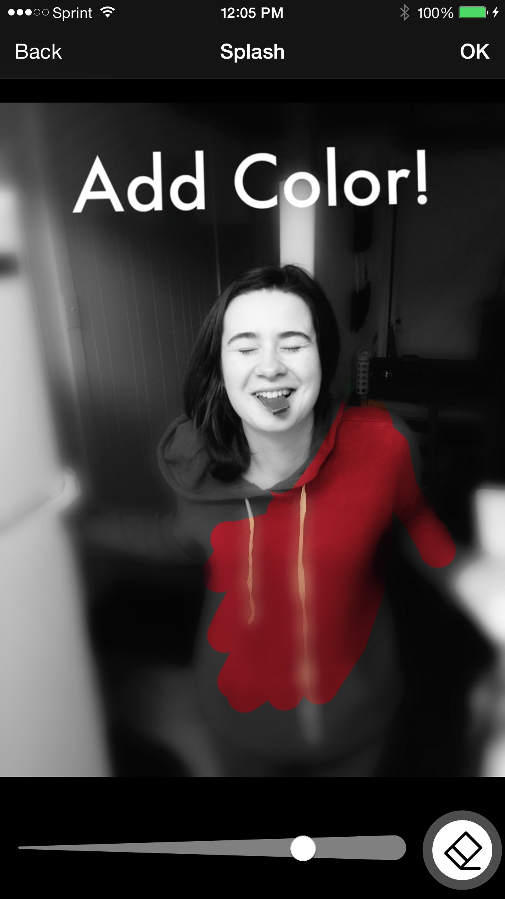
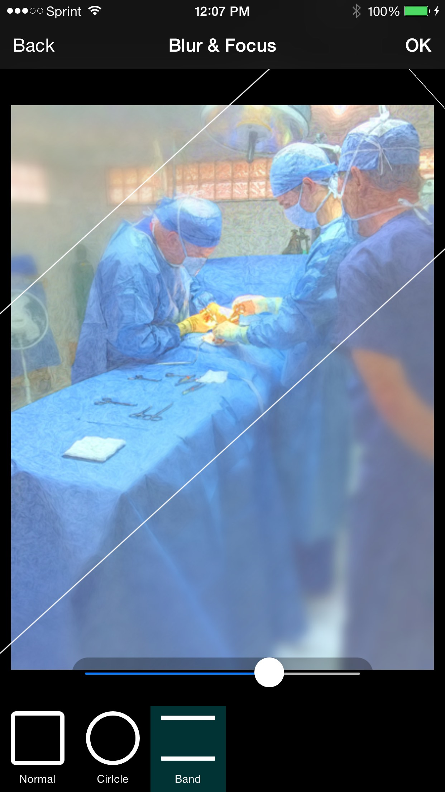
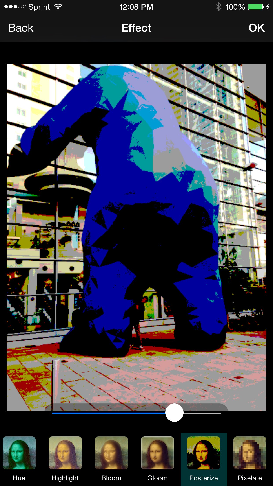
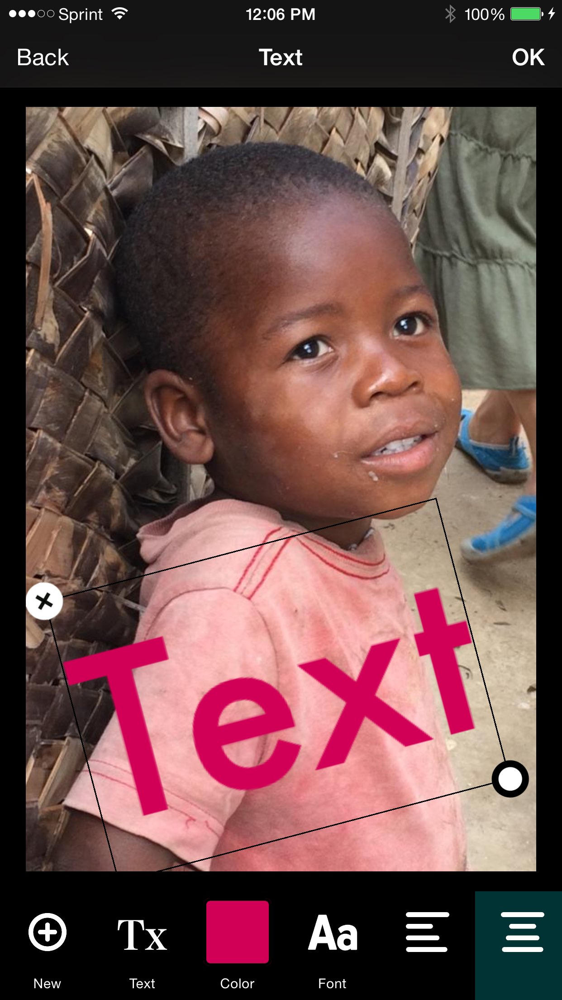

Paintr
Create a painting with the touch of a button.
A simple and easy way to create and share beautiful photo masterpieces.
-
What can it do?
Need to crop, resize, or add some flair to your photo? We’ve got your back. Adjust the color, brightness, contrast, saturation, or sharpness? Welcome to Paintr.
 -
Selective Coloring
Black and white photography can give very powerful meaning to a photo, but sometimes a bit of color makes it truly outstanding. It can turn your plain photo into a real work of art.
 -
Bokeh
Add some extra contrast to focus the attention on the subject. The ability to blur the background is an easy skill to learn with Paintr.
 -
Photo Effects
A photo without effects is like a unicorn without a rainbow. That’s why Paintr puts tons of effects at your fingertips so you can create photos as unique as you are.
 -
Postcard
Turn any photo into an instant message to a friend!
